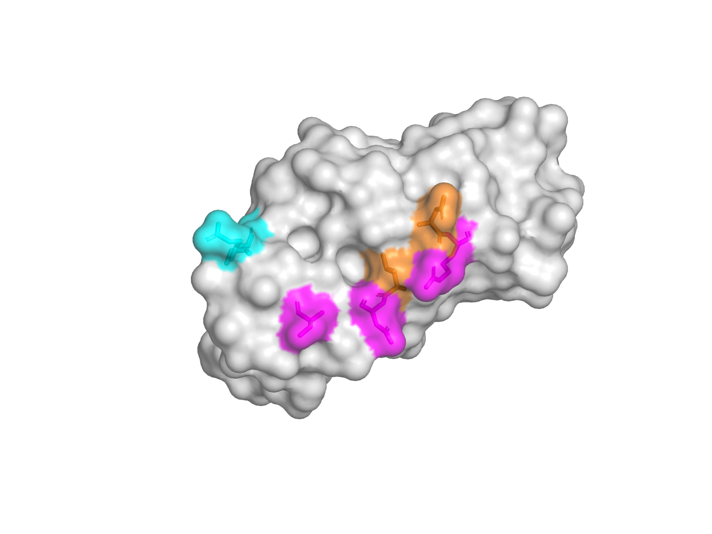
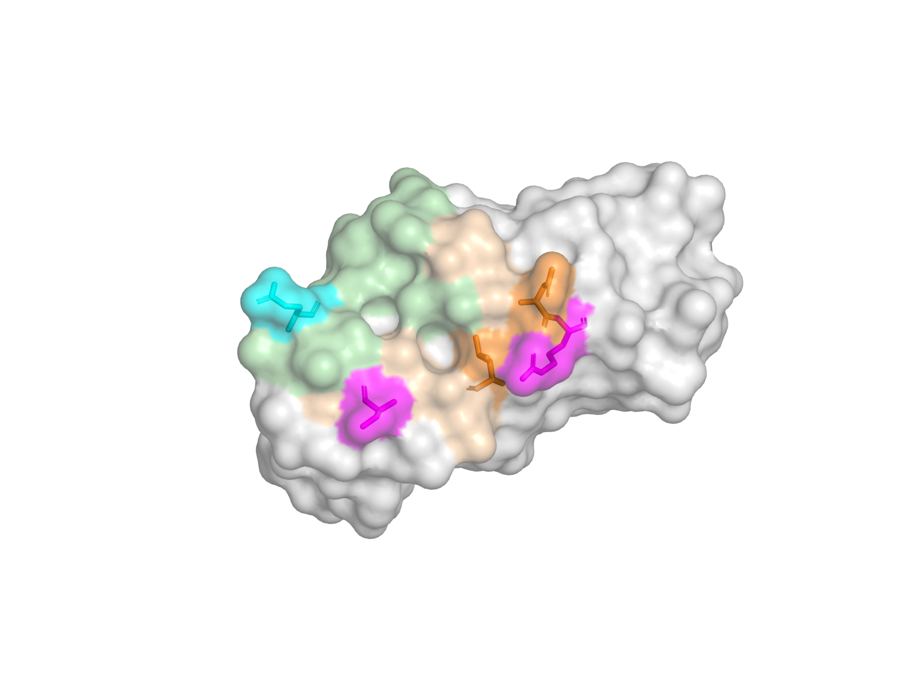
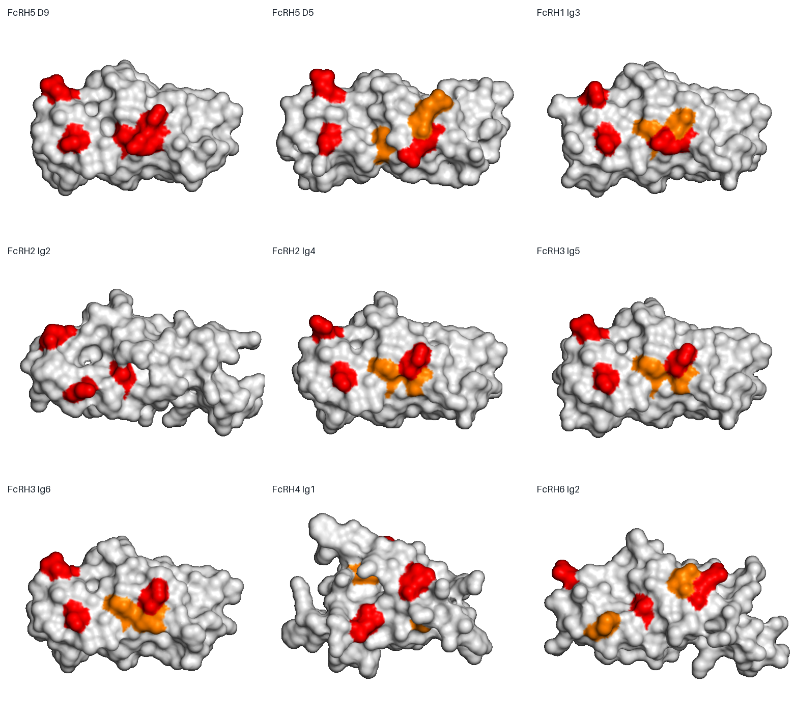
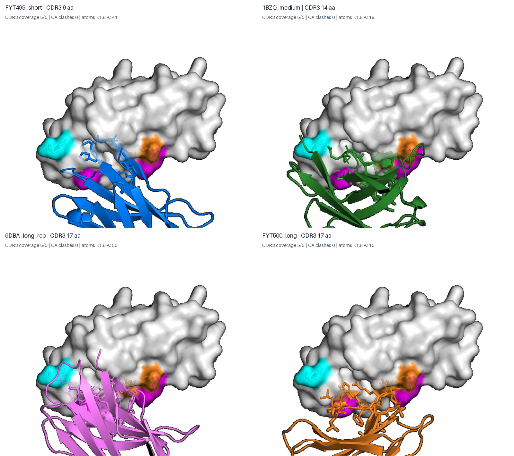
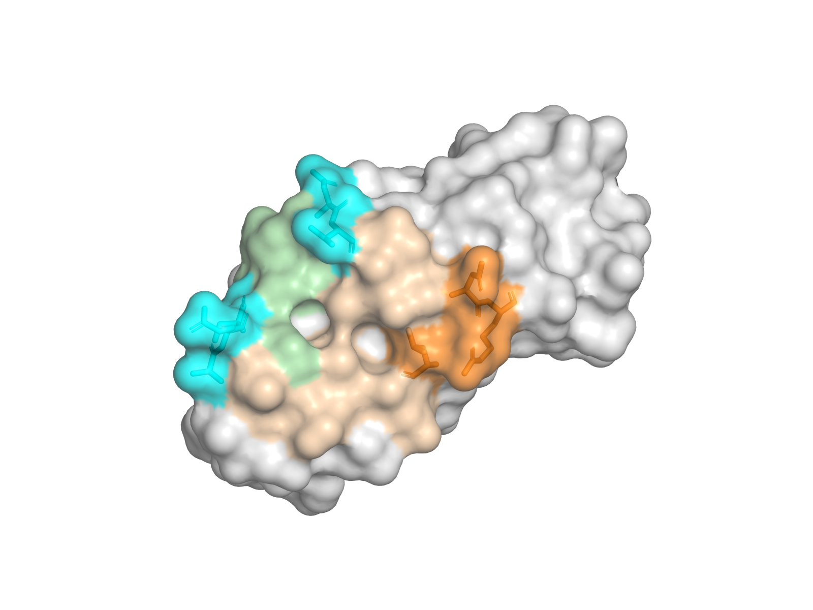
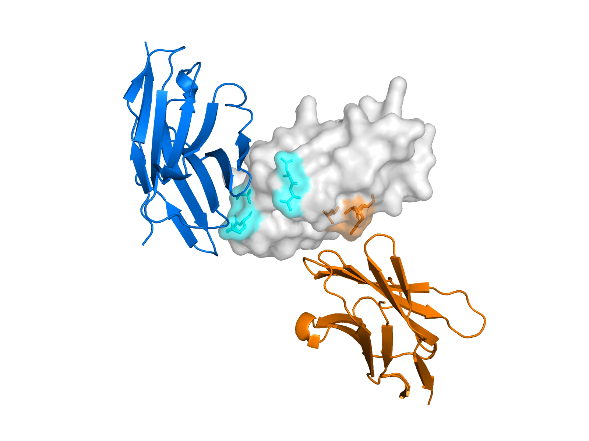
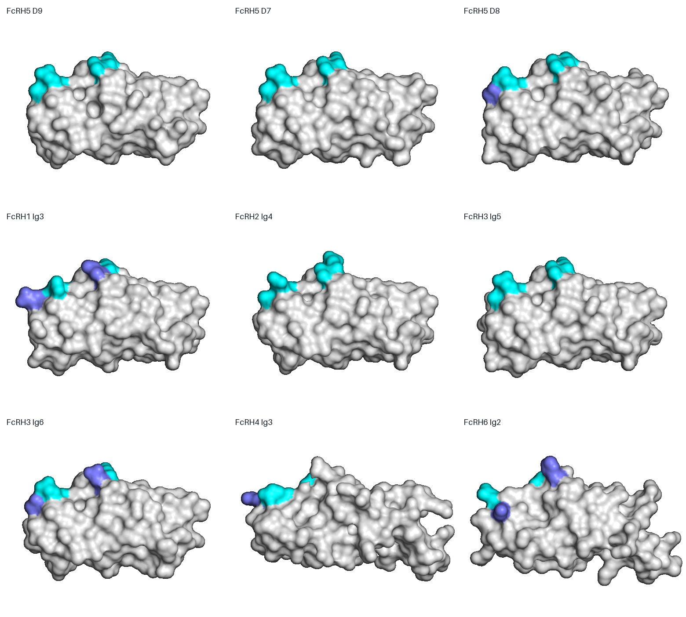

FcRH5 D9 单/双VHH表位设计报告 v3修订版
本次修订解决两个问题：单VHH不再只是重链侧NRLS的复制，而是跨越Cevostamab VH/VL足迹边界；VHH覆盖性不再只用一个完整骨架判断，而是用4个不同CDR3长度/构象的VHH，并且只以CDR3原子计算锚点覆盖。
两张细节图是否被考虑？
答案需要分版本说明：v2基本没有把这两张图作为表位约束；v2的L781/R785/D822/R829/T832与图中五个直接残基零重叠，应视为“全D9表面特异性探索”，不能视为Cevostamab图像支持表位。v3原版确实考虑了细节图，但把两侧拆开：NRLS保留R796/S808，DVAES保留E812/S814，N806因糖基化风险未作硬锚点。问题在于原单VHH没有同时读取两侧，本次已经纠正。
| 细节图残基 | 图像侧 | v2 | v3原版 | v3修订单VHH |
|---|---|---|---|---|
| R796 | 重链/紫链 | 未采用 | NRLS采用 | NRLSE采用 |
| N806 | 重链/紫链 | 未采用 | 证据保留，未作硬锚点 | 支持/糖基化环境，不作硬锚点 |
| S808 | 重链/紫链 | 未采用 | NRLS采用 | NRLSE采用 |
| E812 | 轻链/蓝链 | 未采用 | DVAES采用，但单VHH NRLS未采用 | NRLSE采用 |
| S814 | 轻链/蓝链 | 未采用 | DVAES采用，但单VHH NRLS未采用 | 支持残基；NRLSS备选采用 |

颜色：紫红=重链细节图R796/N806/S808；青色=轻链细节图E812/S814；橙色=用于提升D9特异性的N795/L805。NRLSE选择R796/S808/E812和两个橙色扩展；N806、S814保留为支持/验证残基。
方案一：跨轻/重链边界的单VHH

R796负责电荷判别；S808提供极性/方向锁定。
E812使单VHH必须真正跨入轻链足迹，而不是只复现NRLS。
N795/L805降低D7、FcRH2、FcRH3等同源表面复现风险。
N806与S814：N806-L807-S808构成潜在N-糖基化序列，因此N806不能作为必须读取的裸侧链锚点；S814距离合适，但以S814替代E812的NRLSS在多模板刚性测试中总体碰撞更高，故作为备选/验证残基。
全域特异性
红色为与D9相同，橙色为替换；最高风险域也只保留3/5。

| 比较域 | 映射序列 | 相同数 |
|---|---|---|
| FcRH1_Ig3 | SRFSE | 3/5 |
| FcRH2_Ig2 | --LSE | 3/5 |
| FcRH2_Ig4 | NSFSE | 3/5 |
| FcRH3_Ig5 | NSFSE | 3/5 |
| FcRH3_Ig6 | NIFSE | 3/5 |
| FcRH4_Ig1 | HRLGE | 3/5 |
| FcRH5_D5 | RRISE | 3/5 |
| FcRH6_Ig2 | DRLPE | 3/5 |
| FcRH6_Ig3 | NHLPE | 3/5 |
| FcRH2_Ig1 | VFLSS | 2/5 |
| FcRH2_Ig3 | KKLPE | 2/5 |
| FcRH3_Ig2 | N-VSD | 2/5 |
CDR3专项覆盖：4个VHH模板
模板包括本地FYT-499（9 aa）、实验结构1BZQ（14 aa）、实验结构6DBA（17 aa）和本地FYT-500（17 aa）。搜索时只有CDR3原子能计入锚点覆盖；整VHH仅用于骨架和原子碰撞检查。

| 模板 | CDR3长度 | CDR3序列 | 覆盖 | CA冲突 | <1.8 Å原子 |
|---|---|---|---|---|---|
| FYT499_short | 9 aa | NARHSGDDY | 5/5 | 0 | 41 |
| 1BZQ_medium | 14 aa | AAGGYELRDRTYGQ | 5/5 | 0 | 19 |
| 6DBA_long_rep | 17 aa | TLHRFCNTWSSLGTLNV | 5/5 | 0 | 50 |
| FYT500_long | 17 aa | AADLYRCGTLLPVHFDY | 5/5 | 0 | 10 |
修订后的CDR3建议
- 主设计库使用14、15、16、17 aa四档；同一长度至少保留2–3类环拓扑。
- 9 aa作为短环对照，不作为主库：虽可几何覆盖，但刚性侧链冲突高，且E812位于覆盖边缘。
- 优先让CDR3跨S808→E812并读取E812；CDR1/CDR2补充N795/R796/L805，而不是要求CDR3独自承担全部结合能。
- 每个候选至少做5个复合物预测，要求R796、S808、E812在多数模型中稳定接触，并进行糖链与侧链松弛。
方案二：双VHH保持不变
VHH-A：NRL
N795/R796/L805；高特异门控臂，无完整复现域。
VHH-B：DVAES
D790/V791/A811/E812/S814；FcRH5-D7、FcRH2-Ig4、FcRH3-Ig5完整复现，必须维持中等亲和并由A门控。

两块中心相距16.72 Å、最近锚点11.9 Å、表面法向夹角104.9°。联合包络中VHH–VHH <2.2 Å冲突为0，因此仍支持同时结合的拓扑可行性。


对v2/v3结论的最终定位
- v2表位：适合作为“人FcRH5-D9特异性新VHH表面探索”，不适合作为“复刻Cevostamab结合位点”的首选。
- v3原NRLS：是可信的重链侧紧凑回退方案，但没有利用轻链细节图，不再列为单VHH第一选择。
- v3修订NRLSE：当前最符合“复用Cevostamab两侧信息、但缩小到一个VHH可覆盖范围”的方案。
- 双VHH NRL+DVAES：目标不同，是两个独立分子的同时占位方案，不应与单VHH NRLSE混为一谈。
实验优先级
- 用糖基化D9/ECD分别测试R796A、S808A、E812A和NRLSE组合突变；N806Q只作为糖依赖机制探针。
- 比较NRLSE、NRLSS、NRLS三类VHH库，要求NRLSE候选对E812A出现明确结合损失，证明真正跨入轻链足迹。
- 对FcRH5 D1–D8及FcRH1/2/3/4/6全域反筛，并做全长细胞FACS。
- 双VHH另行用顺序SPR/BLI验证同时占位，再测试A→B串联。
文件说明
- 01_chainwise_anchor_design.pse：链拆分、NRLSE、细节图锚点和双位点场景。
- 03a_all_domains_single_NRLSE.pse：29域NRLSE映射；旧NRLS PSE保留作回退比较。
- 05_multi_CDR3_template_coverage.pse：12个场景，覆盖3套锚点×4个CDR3模板。
- 表02：全部域映射；表07：CDR3专项数据；表08：细节图逐残基核对。